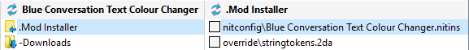
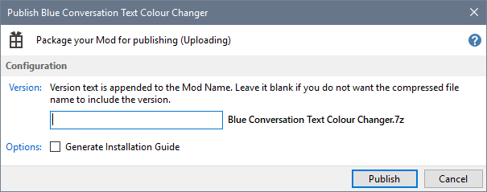
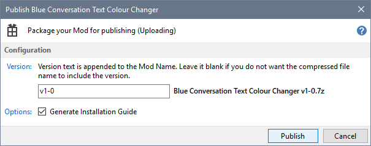
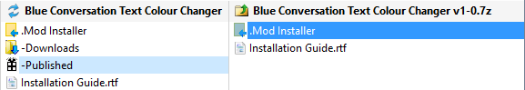
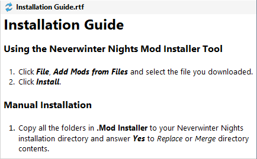
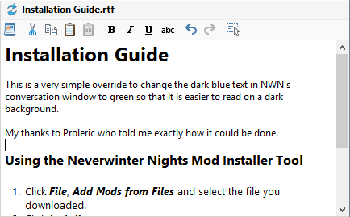
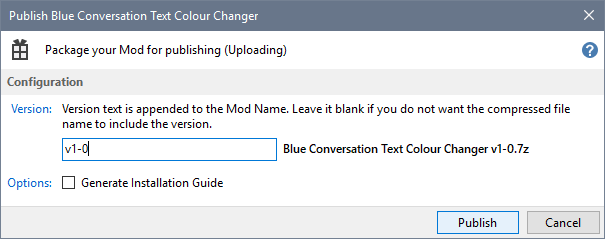
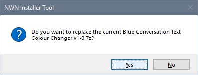
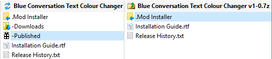

Use the Publish Mod feature to create a 7-Zip archive from your Mod, which you can upload for other people to use. The archive you create includes all files (except Game Play Time files) and folders (except the Downloads, History and Published folders).
If you have defined a Wizard for your Mod, Publish Mod prefixes folder and file paths with the 7-Zip archive filename that will be used when your Mod is downloaded (eg. mod_name_v1.0.7z\folder\file.hak).
- Select the Mod you want to Publish.

- Click Publish Mod from the Manage menu.

- Specify the Mod's version number, which must be changed when your Mod includes a Wizard, and whether you want to generate an Installation Guide, then click Publish.

- The Installer Tool places the generated 7-Zip file, containing the Mod Installer and the generated Installation Guide, in the Published folder.

- This is what the generated Installation Guide looks like.

- You can edit the generated Installation Guide.

- You can add other documentation files or folders and then repeat step 3 using the same version number to recreate the 7-Zip file.
If you tick Generate Installation Guide, your edited guide will be overwritten.


- You can now upload the 7-Zip file to make your Mod available to Neverwinter Nights users.

Related Topics
Download and install Neverwinter Vault Projects
Download and install Mods from other sites
Add a new Mod
Record a Mod's Web Page Link
Add downloaded files to a Mod
Reduce file clutter
Review Mod information in added files
Create Mod Installers
Customise Mod Installers
Manage Mod file conflicts
Install Mods
Uninstall Mods
Deal with Mod updates
Make Mod notes and record information
Publish Mods
Add Mods from downloaded files
Surazal's Mod notes